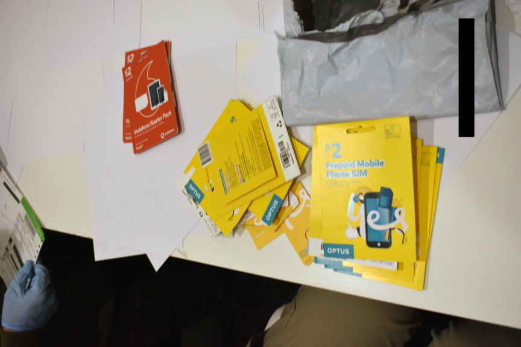
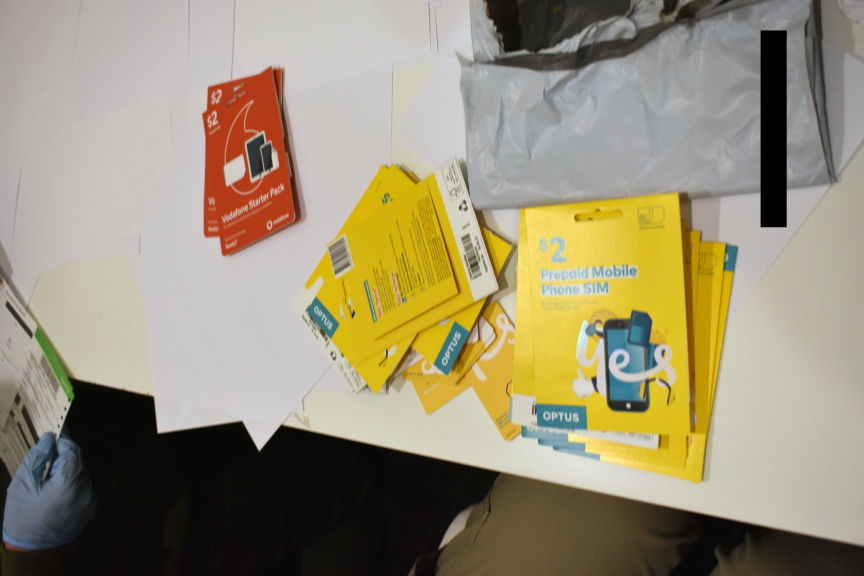

Australian Fraudster Sentenced to Prison
An Australian woman was imprisoned for her role in an international conspiracy that used stolen identities purchased on the dark web in the theft of millions of dollars.
According to the Australian Federal Police (AFP), the 24-year-old woman from Melbourne played a major role in the fraudulent scheme that stole more than $2.2 million from the superannuation and share trading accounts of unsuspecting victims.

The AFP and the Australian Securities and Investments Commission (ASIC), launched investigations into the fraud ring the woman was part of in late 2018, in an operation dubbed Operation Birks.
The investigators arrested the woman on April 30, 2019, at Melbourne Airport as she returned from Turkey. The investigators executed a search warrant on the defendant's residence and seized her electronic devices and evidence of fraud such as multiple SIM cards. Forensic examination of the electronic devices led to the discovery of hundreds of stolen identities.
Further investigations revealed that after purchasing the stolen identities on the dark web the woman and her co-conspirators created fake identities. They then accessed the superannuation and share trading accounts of the victims and transferred the money in the accounts to bank accounts opened with the stolen identities. The investigators reportedly recovered more than 60 bank accounts created by the ring.
The woman and her accomplices had also created a phishing website that resembled the website of a legitimate superannuation fund. They paid for advertisements that made the site appear at the top of search results. They then stole the login credentials of people who visited their fraudulent site. They accessed the accounts of the victims on the legitimate website of the fund using the stolen credentials.
After stealing the victims' funds the fraudsters transferred the funds to a contact in Hong Kong. The Hong Kong co-conspirator would then purchase luxury brands' items, resell them and send the proceeds to the woman and her accomplices in cryptocurrencies.
In addition to stealing more than $2.2 million and laundering at least $1.7 million of it, the woman and her co-conspirators had reportedly attempted to steal $5 million more.
The woman was sentenced to five years and six months in prison on December 16, 2022. The defendant must serve at least four years of the sentence before she is eligible for parole.
According to the Australian Federal Police (AFP), the 24-year-old woman from Melbourne played a major role in the fraudulent scheme that stole more than $2.2 million from the superannuation and share trading accounts of unsuspecting victims.

The AFP and the Australian Securities and Investments Commission (ASIC), launched investigations into the fraud ring the woman was part of in late 2018, in an operation dubbed Operation Birks.
The investigators arrested the woman on April 30, 2019, at Melbourne Airport as she returned from Turkey. The investigators executed a search warrant on the defendant's residence and seized her electronic devices and evidence of fraud such as multiple SIM cards. Forensic examination of the electronic devices led to the discovery of hundreds of stolen identities.
Further investigations revealed that after purchasing the stolen identities on the dark web the woman and her co-conspirators created fake identities. They then accessed the superannuation and share trading accounts of the victims and transferred the money in the accounts to bank accounts opened with the stolen identities. The investigators reportedly recovered more than 60 bank accounts created by the ring.
The woman and her accomplices had also created a phishing website that resembled the website of a legitimate superannuation fund. They paid for advertisements that made the site appear at the top of search results. They then stole the login credentials of people who visited their fraudulent site. They accessed the accounts of the victims on the legitimate website of the fund using the stolen credentials.
After stealing the victims' funds the fraudsters transferred the funds to a contact in Hong Kong. The Hong Kong co-conspirator would then purchase luxury brands' items, resell them and send the proceeds to the woman and her accomplices in cryptocurrencies.
In addition to stealing more than $2.2 million and laundering at least $1.7 million of it, the woman and her co-conspirators had reportedly attempted to steal $5 million more.
The woman was sentenced to five years and six months in prison on December 16, 2022. The defendant must serve at least four years of the sentence before she is eligible for parole.